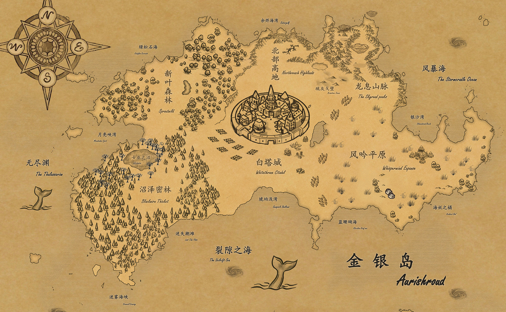

风暴尽头 · 诸族之地
金银岛
金银岛，镌刻在人类大陆古籍扉页上的谜团，传说那里有着流淌着水银的溪流，金叶在风中低语的密林，珍珠般闪烁的沙滩，是无人到达的海尽头。然而，风暴与暗礁掩藏下，这里每一寸土地都蛰伏着远古的致命杀机……

移入地图查看地名 · 点击或轻触阅读地域资料
海域
金银岛四面环海，近海区尚且平和，但越往外围航行，狂暴的漩涡与风暴就越是致命，将这片神秘之地与外界彻底隔绝。四面的海域被人鱼和塞壬瓜分，往东是人鱼王国的碧波之境，往西是塞壬的死亡猎场，北方则是连海族都不敢轻易涉足的极寒死域。
神奇生物
珍珠目鱼
眼部进化成天然珍珠的深海鱼，每颗“眼珠珍珠”都记录着深海奇景，是上好的魔法材料，但取珠时不能和鱼眼对视，否则会见到自己死亡的影像。
绯雾水母
伞盖呈现晚霞色的水母群，游动时释放致幻红雾，常在夏季的晴天出没。可以捕捉作为魔法材料，但必须用银丝编织的容器（普通材质会被雾气压碎）。
风暴海带
一种巨型藻类，叶片储存着雷电能量，数量多的时候能引发雷暴，收割者稍有不慎就会被电。
白塔城
位于金银岛中央，气候宜人，土地平坦肥沃，被上古法阵和魔法屏障笼罩守卫着，是被所有种族共同认可的“和平区”，也是金银岛上最大的贸易中心。城内多种族混居，拥有着严格的种族平等条例，几乎所有种族都能在这里找到自己的容身之所，甚至包括一些罕见的边缘族群。不过鉴于整个大陆的人口比例，最多的依然还是兽人；精灵、短矮人、血族、魅魔、海族和女巫也都很常见。岛上最大的魅魔聚集地也坐落于此。
神奇生物
史莱姆
一类无固定形态的凝胶状生物，通常由粘液状物质构成，具有半透明或浑浊的胶质躯体。这些凝胶状生物以惊人的适应力遍布世界各地，演化出了众多亚种和变种，诸如酸液型、治愈型、发光种等等；不同的亚种生活习性也有一定程度上的不同，能起到的效用也多种多样，如酸蚀史莱姆的凝液被短矮人用于矿石提纯、草原史莱姆会吞噬腐物等等。
元素妖精
金银岛的大家认为，世界上存在着元素妖精，而元素魔法便是依赖元素妖精眷顾才得以施展。然而这种传说中的生灵无形无声，没有人见过，也没有人知道它们是否真实存在。
风吟平原
这片广袤无垠的金色草原得名于永不止息的风声——当季风掠过齐腰的剑叶草时，便会发出类似竖琴共鸣的悠远声响。平原北部被怒焰王廷的兽人占据，南部则是铁蹄盟约的领地。这里季节分明：在旱季，迁徙的雷角兽群会踏出雷鸣般的蹄声；雨季来临时，发光的地下菌丝网络又会将整个平原变成星图般的荧光画卷。
神奇生物
狮鹫
鹰首狮身，翼展可达五米，四肢如雄狮般强健；巢居悬崖峭壁，以岩羊、野马为食，偶尔袭击落单兽人；能记住人类面孔，报复心极强，但可用新鲜牛羊肉贿赂；怒焰王廷一直试图驯化作为飞行坐骑，但目前仅有个位数的成功案例。
雷角兽
披甲巨兽，鼻角能积蓄静电，冲锋时引发小型雷电；雨季集体迁徙，角尖放电可点燃草原引发火旋风；兽人战士视其角为荣耀战利品，其角磨成粉末可以制作“避雷护符”。
星脉菌丝
这些深埋地下的发光菌丝网络会在雨季苏醒，如活体星图般在草原上投射出幽蓝光纹。可提炼其发光体液作为魔法材料，但采集时必须小心，吸入其飘散的孢子会让人产生致命幻觉。
水晶蜉蝣
栖息在草丛中的透明昆虫，翅膀可以折射出七彩光晕，一般只在日出前后的两个小时内出没。当成群的水晶蜉蝣在清晨飞起，便可见到极其绚丽的景观，被称为“蜉蝣彩虹”，为心爱之人放飞蜉蝣彩虹是兽人的浪漫仪式。
沼泽密林
这片终年笼罩在幽暗中的潮湿地域，越往深处，盘根错节的古树越是遮天蔽日，阳光被彻底隔绝在外。密林腹地耸立着血族的暗夜城堡；黑色荆棘生长的地方正是女巫的聚集处。这里水洼的倒影总比现实快上三秒，据说凝视太久的人会消失在时差里。
神奇生物
环彩毒蛙
背部分布着七彩环形花纹，每种颜色代表不同性质的剧毒。女巫们精心培育不同色系，不同毒液可以制作不同效果的魔药。
影织蜘蛛
在特定的培育下吐出的蛛丝会变成半透明的“暗影丝绸”，这种材料制作的衣物能融入夜色，达到在黑暗中隐身的效果。
梦魇藤
深紫色的藤本植物，会开出能散发致幻香气的花朵，使人陷入难以摆脱的梦魇。
新叶森林
这片被永恒春意笼罩的翠绿秘境终年温暖湿润，阳光透过茂密的树冠洒下斑驳金辉。精灵的树屋悬于古木枝干间，半人马部落的帐篷点缀在林间空地，而花仙子则在花丛中清唱歌谣。森林中央的泪湖永远倒映着星空，传说喝下湖水能听懂动物语言。
神奇生物
独角兽
它们的角散发着珍珠般的光泽，能治愈伤口，银色的蹄子踏过之处会绽开小小的星光花。不过据说只有心地纯洁之人才能靠近这些美丽的生灵。脱落的角是极佳的药材与魔法材料，但在大陆上极少流通。
蘑菇人
这些长着菌柄小脸的低阶智慧生物，用菌丝网络传递简单的情绪，最大的智慧是懂得把毒蘑菇种在入侵者必经之路上。下雨天时，你会看见它们集体仰着伞盖接水喝，发出“噗噜噗噜”的满足声。
树怪
这些沉睡的巨树有着极为缓慢的思维，十年对他们而言不过是一次小憩。粗糙的树干上生长着类似五官的瘤结，平时总是闭目养神，偶尔伸出枝条为疲惫的小动物提供歇脚的地方。
北部高地
这片险峻之地囊括了死火山的黑色岩壁、终年不化的雪峰，以及靠近龙息山脉的硫灰戈壁——一片由火山灰与碎晶构成的荒芜沙漠。环境恶劣，人迹罕至，却也因此孕育出许多独特的生命。
冰雪精灵是此处仅有的常住民，他们定居在和新叶森林交界的山脉上。但除此之外，也会有很多冒险家前来探险、历练，当然最重要的是采集各种各样的材料。
神奇生物
冰髓蛾
通体透明的飞蛾，翅膀扇动时会洒落细碎的冰晶，磨成粉末是很好的魔法材料。
硫火蜥蜴
鳞片缝隙会渗出可燃黏液，在硫灰戈壁上爬行时留下转瞬即逝的火痕。
霜纹地衣
在岩石表面蔓延的蓝白色纹路，实际是藻类与真菌的共生体，能在极端低温下保持活性。将霜纹地衣浸泡在月光照射的雪水中，会发酵出一种“冰霜苦酒”，饮下后能暂时获得抗寒能力。
龙息山脉
巨大的山脉与群山终年笼罩在巨龙的威压之下，几座浮空岛被永恒的龙息托举在空中，这里是巨龙的沉眠之地。整片山脉寂静得可怕，除了石像鬼在峭壁间巡逻外，几乎没有任何活物——龙的威压会按生物的攻击力成倍施加压力，越是凶悍的存在越会被压制得寸步难行。但在山脉外围的缓冲地带，却生活着许多弱小但狡猾的生物，它们依赖着龙威以驱赶天敌。
神奇生物
石像鬼
这些龙息山脉的沉默守卫，是唯一能在巨龙威压下自由活动的存在。但它们并非活物，而是被龙息感染异变的活化石像；它们行动迟缓，按本能行动；一旦被石像鬼的爪牙划破皮肉，伤口会感染石化。
岩冠雉
一种头顶岩石状冠羽的大型禽鸟，会在龙息山脉的针叶林间进行笨拙的低空滑翔。它们的冠羽能吸收龙威压力，是制作抗压护符的核心材料。
哨岩松鼠
颊囊里藏着共鸣石的树栖啮齿类，遇到危险时会发出震碎坚果的超声波。它们的巢穴总在龙威盲区，冒险家通过观察其活动轨迹来规划安全路线。
创世神话
山父阿卡罗斯 · 海母涅墨希斯
混沌中的双神
世界之初是一片混沌，其中沉睡着两位原初神——群山之基阿卡罗斯与原初之海涅墨希斯，也被称为山父与海母。
山海初成
某一刻，海母的潮声惊醒了阿卡罗斯。
山父怒而起身，他的脊背化作第一座山脉，四肢撑开虚无，形成天空与大地；海母嗤笑其笨拙，她翻卷身躯，从口中吐出无尽海水，淹没山父的脚踝，形成最初的海洋。
世界由此诞生：陆地是山父的骨骼与肌肉，海洋是海母的呼吸与血液。
火星、群星与母树
山父厌恶海母的无序，抓起一块岩石捏成巨锤，砸向海面；海母却以歌声回应，她的音波震碎岩石，飞溅的碎屑中迸出火星。
山父的火星落入大地，化作金属矿脉；海母的泡沫升腾至天空，凝结为星辰。
一块熔岩与泡沫交融，落在山父的肩头，生根发芽——这便是第一棵精灵母树。
金银岛诞生
双神的斗争愈演愈烈：
山父以锤击地，造出连绵群山；海母掀起海啸，啃噬陆地边缘，而在二者神力碰撞的中心，一块陆地既未被熔岩吞没，亦未被海水侵蚀——金银岛由此而来。
诸族降生
疲惫的二神暂歇，他们的造物与残渣化作生灵：
山父的怒火中诞生了兽人，熔岩在血脉中奔腾；锤击的余烬化作短矮人，矿脉在瞳孔中衍生。海母的歌声凝结成海族，潮声在血脉中回响；怨念沉淀作血族，心脏在永夜中跳动；山父的鬃毛与海母的浪花交织成人马，铁蹄上映照着星河。
双神的喘息落在母树的新芽，精灵自晨光中睁眼；争执的回音飘荡在深渊，魅魔自阴影中诞生；这场创世的余晖汇聚成世间第一位女巫，拾起记忆的火种；唯有巨龙自裂缝而来，异界的鳞片闪烁着冷光，默然俯视这场生命史诗。
双神沉眠
神战的最后，山父化为山峦的基石沉睡进地底，海母则休眠在海沟的最深处。
这就是金银岛的创世神话。
岛上小知识
时间与季节
金银岛各地的季节并不同步。同一时刻，不同区域可能呈现截然不同的季节景象，但各地仍保有自身的基本气候特征。
种族寿命
巨龙 >> 精灵 = 女巫 > 吸血鬼 >= 魅魔 >> 海族 = 兽人 = 人马 > 短矮人 >> 花仙子
岛上的种族数量
海族 = 兽人 >= 短矮人 >> 血族 = 精灵 >> 人马 > 魅魔 >> 女巫 > 花仙子 > 龙